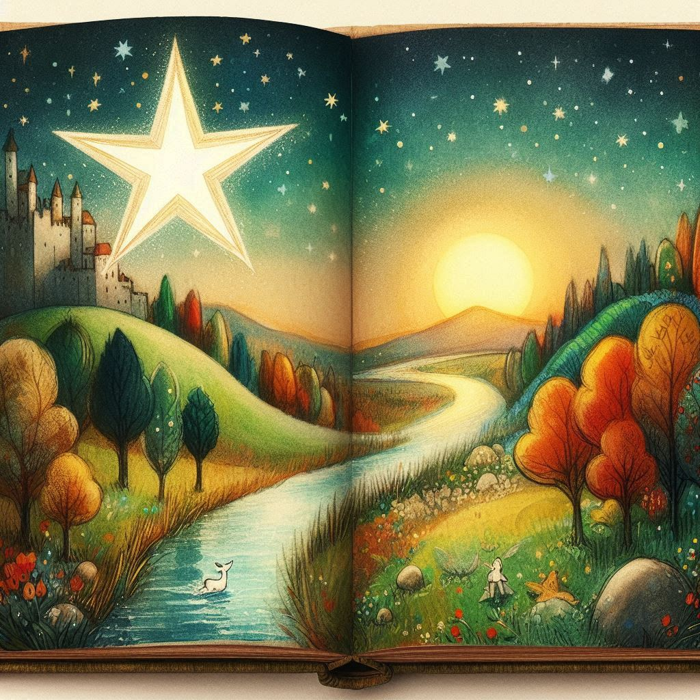
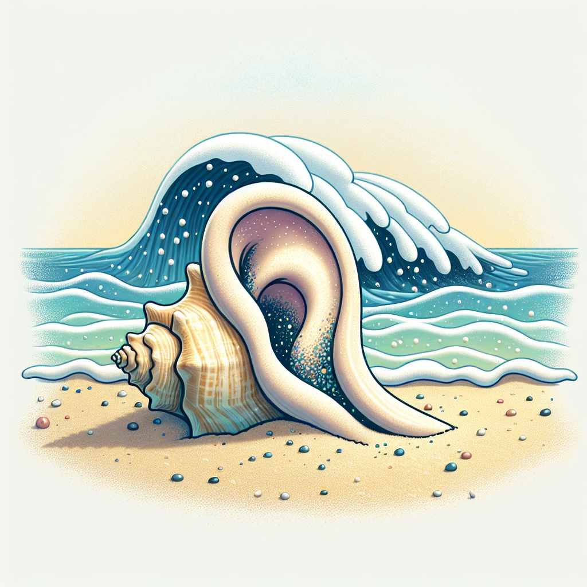

Poesía Infantil de Ricardo Abril

En poesía, que es todo y está en todo si así lo queremos ver, las palabras no
pertenecen a nadie en particular. Igual que las estrellas, están ahí, siempre, para que las miremos,
olamos, sintamos, pensemos, hablemos, si no hay nubes en nuestro corazón. Y si hay nubes, para que
no olvidemos que están ahí, siempre, ofreciéndonos su música, queriendo ser atrapadas y pronunciadas
con amor.
¿Cuántas palabras necesitamos descubrir o tal vez crear para construir un puente
que una verdaderamente al mundo en una sola lucha por una vida mejor para todos?
No es de las palabras la culpa cuando las usamos como cuchillos para herir a los
demás. Ni cuando nos las tragamos para no decir a otro que lo amamos: al padre, a la madre, la
novia, el amigo, al perro, al sol, al río, al árbol o a su sombra, a la lluvia…. No es de las
palabras la culpa cuando no las escuchamos si vienen de los demás y en cambio queremos imponerlas si
las decimos nosotros. Ni tampoco cuando traicionamos su ingenuidad (se prestan para todo) y las
impregnamos de odio, o de cinismo, o de hipocresía. Igual podríamos hacer completamente lo
contrario.
Somos tierra hecha cuerpo. Corazón de tierra, garganta de tierra. Garganta: flauta
de tierra por la que el aire, duende encantador, pasa cantando, si lo dejamos. O matando y
matándonos si lo obligamos. Frente a las palabras construir o destruir es una decisión tan sólo
nuestra. Siempre. Los invito a ser arquitectos de la palabra, construyendo con ella espacios de luz
y de amor en los que podamos encontrarnos todos los seres humanos y sonreír agradecidos, aceptando
que somos privilegiados, que la vida es un milagro y la poesía su mejor retrato.
El corazón de cada palabra es una caja musical. Si abrimos ese corazón y
escuchamos su canto, nos sumergiremos en un mundo de música y sabiduría porque cada palabra llamará
a sus hermanas y poco a poco de juntarán formando coros maravillosos que nos descubrirán cosas muy
sencillas y bellas que están en nosotros mismos y en lo que nos rodea.
Aquí están mis versos, niño, niña, hermanos y amigos; ellos son mis hallazgos, me
han enseñado muchas cosas, me han sembrado de alegría. Son tuyos y de todos. Tómalos y juega con
ellos si te agrada. Y cuando quieras busca por ti mismo la poesía en el sagrado cofre de tu propio
corazón. Encontrarás muchísimos tesoros….
Pájaro Madrugador
Pájaro,
enséñame a madrugar
saludando al día
con un cantar,
también enséñame
a vivir
sencillamente,
sin presumir,
amando al viento
la lluvia, el sol,
volando libre hasta morir!

Luna Dormilona
La luna se ha dormido
cobijada con la manta
que el viento le ha tejido
con hermosas nubes blancas...
Amorosas las estrellas
hacen de fieles guardianas
mientras sueña cosas bellas
acostadita en su cama....
¿Qué soñará la luna?
¿Quién su sueño adivinara?
¡Ay, si por buena fortuna
viniera y me lo contara!

Estrella y Río
- Estrellita, ¿Por qué miras
todas las noches al río?
- Me gusta verme en su espejo,
tan claro, tan cristalino…
- ¿Acaso estás enamorada?
- Sí, de la ternura de su mirada…
- ¡Pero estrellita: tú eres de fuego
y él, en cambio, de agua!
- ¡Lo amo porque es frescura
para el calor de mi alma!

Caracolito
Caracolito vacío,
oído del mar:
¿Cuántos secretos
te han dado a guardar?

Ciempiés
Dicen que tiene 100 pies
y que todos los mueve a la vez,
yo nunca los he contado
pero me han asegurado
que no tiene ni más ni menos,
que todos los tiene buenos
y que vive muy endeudado
con sus cuentas de calzado.
¿Hasta dónde con sus pies
el ciempiés habrá llegado?
Y moviéndolos a la vez
¡Cómo estará de cansado!

La Palabra
Soy la palabra
palabra,
el que quiera
entenderme
que me abra…
Una caja mágica soy:
contengo todas las cosas
y en todas ellas estoy:
Con la luna
yo soy luna
y soy sol
con el sol,
soy sonrisa
en tu sonrisa
y en tu nombre
alegre voy…